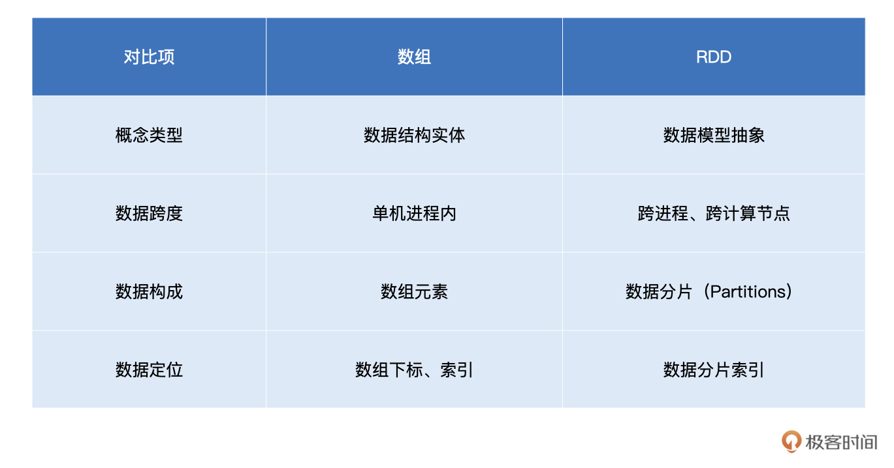
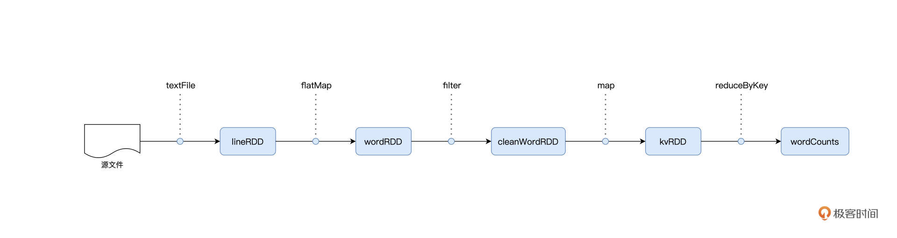
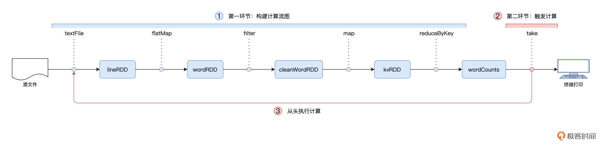
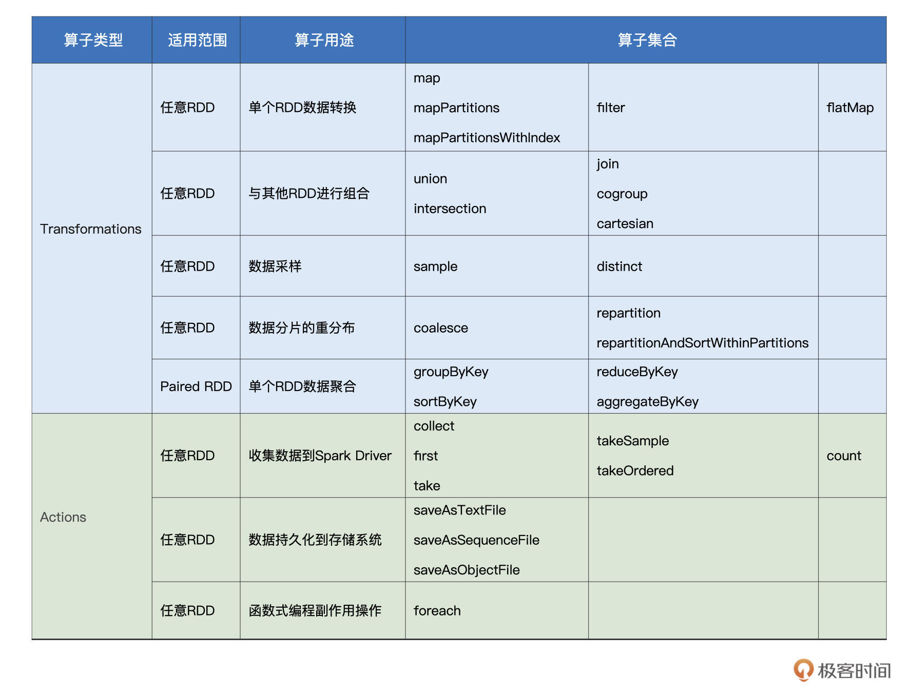

- 00 开篇词 入门Spark，你需要学会“三步走”.md
- 01 Spark：从“大数据的Hello World”开始.md
- 02 RDD与编程模型：延迟计算是怎么回事？.md
- 03 RDD常用算子（一）：RDD内部的数据转换.md
- 04 进程模型与分布式部署：分布式计算是怎么回事？.md
- 05 调度系统：如何把握分布式计算的精髓？.md
- 06 Shuffle管理：为什么Shuffle是性能瓶颈？.md
- 07 RDD常用算子（二）：Spark如何实现数据聚合？.md
- 08 内存管理：Spark如何使用内存？.md
- 09 RDD常用算子（三）：数据的准备、重分布与持久化.md
- 10 广播变量 & 累加器：共享变量是用来做什么的？.md
- 11 存储系统：数据到底都存哪儿了？.md
- 12 基础配置详解：哪些参数会影响应用程序稳定性？.md
- 13 Spark SQL：让我们从“小汽车摇号分析”开始.md
- 14 台前幕后：DataFrame与Spark SQL的由来.md
- 15 数据源与数据格式：DataFrame从何而来？.md
- 16 数据转换：如何在DataFrame之上做数据处理？.md
- 17 数据关联：不同的关联形式与实现机制该怎么选？.md
- 18 数据关联优化：都有哪些Join策略，开发者该如何取舍？.md
- 19 配置项详解：哪些参数会影响应用程序执行性能？.md
- 20 Hive + Spark强强联合：分布式数仓的不二之选.md
- 21 Spark UI（上）：如何高效地定位性能问题？.md
- 22 Spark UI（下）：如何高效地定位性能问题？.md
- 23 Spark MLlib：从“房价预测”开始.md
- 24 特征工程（上）：有哪些常用的特征处理函数？.md
- 25 特征工程（下）：有哪些常用的特征处理函数？.md
- 26 模型训练（上）：决策树系列算法详解.md
- 27 模型训练（中）：回归、分类和聚类算法详解.md
- 28 模型训练（下）：协同过滤与频繁项集算法详解.md
- 29 Spark MLlib Pipeline：高效开发机器学习应用.md
- 30 Structured Streaming：从“流动的Word Count”开始.md
- 31 新一代流处理框架：Batch mode和Continuous mode哪家强？.md
- 32 Window操作&Watermark：流处理引擎提供了哪些优秀机制？.md
- 33 流计算中的数据关联：流与流、流与批.md
- 34 Spark + Kafka：流计算中的“万金油”.md
- 用户故事 小王：保持空杯心态，不做井底之蛙.md
- 结束语 进入时间裂缝，持续学习.md
02 RDD与编程模型：延迟计算是怎么回事？
你好，我是吴磊。
在上一讲，我们一起开发了一个Word Count小应用，并把它敲入到spark-shell中去执行。Word Count的计算步骤非常简单，首先是读取数据源，然后是做分词，最后做分组计数、并把词频最高的几个词汇打印到屏幕上。
如果你也动手实践了这个示例，你可能会发现，在spark-shell的REPL里，所有代码都是立即返回、瞬间就执行完毕了，相比之下，只有最后一行代码，花了好长时间才在屏幕上打印出the、Spark、a、and和of这几个单词。
针对这个现象，你可能会觉得很奇怪：“读取数据源、分组计数应该是最耗时的步骤，为什么它们瞬间就返回了呢？打印单词应该是瞬间的事，为什么这一步反而是最耗时的呢？”要解答这个疑惑，我们还是得从RDD说起。
什么是RDD
为什么非要从RDD说起呢？首先，RDD是构建Spark分布式内存计算引擎的基石，很多Spark核心概念与核心组件，如DAG和调度系统都衍生自RDD。因此，深入理解RDD有利于你更全面、系统地学习 Spark 的工作原理。
其次，尽管RDD API使用频率越来越低，绝大多数人也都已经习惯于DataFrame和Dataset API，但是，无论采用哪种API或是哪种开发语言，你的应用在Spark内部最终都会转化为RDD之上的分布式计算。换句话说，如果你想要对Spark作业有更好的把握，前提是你要对RDD足够了解。
既然RDD如此重要，那么它到底是什么呢？用一句话来概括，RDD是一种抽象，是Spark对于分布式数据集的抽象，它用于囊括所有内存中和磁盘中的分布式数据实体。
在[上一讲]中，我们把RDD看作是数组，咱们不妨延续这个思路，通过对比RDD与数组之间的差异认识一下RDD。
我列了一个表，做了一下RDD和数组对比，你可以先扫一眼：

我在表中从四个方面对数组和RDD进行了对比，现在我来详细解释一下。
首先，就概念本身来说，数组是实体，它是一种存储同类元素的数据结构，而RDD是一种抽象，它所囊括的是分布式计算环境中的分布式数据集。
因此，这两者第二方面的不同就是在活动范围，数组的“活动范围”很窄，仅限于单个计算节点的某个进程内，而RDD代表的数据集是跨进程、跨节点的，它的“活动范围”是整个集群。
至于数组和RDD的第三个不同，则是在数据定位方面。在数组中，承载数据的基本单元是元素，而RDD中承载数据的基本单元是数据分片。在分布式计算环境中，一份完整的数据集，会按照某种规则切割成多份数据分片。这些数据分片被均匀地分发给集群内不同的计算节点和执行进程，从而实现分布式并行计算。
通过以上对比，不难发现，数据分片（Partitions）是RDD抽象的重要属性之一。在初步认识了RDD之后，接下来咱们换个视角，从RDD的重要属性出发，去进一步深入理解RDD。要想吃透RDD，我们必须掌握它的4大属性：
- partitions：数据分片
- partitioner：分片切割规则
- dependencies：RDD依赖
- compute：转换函数
如果单从理论出发、照本宣科地去讲这4大属性，未免过于枯燥、乏味、没意思！所以，我们从一个制作薯片的故事开始，去更好地理解RDD的4大属性。
从薯片的加工流程看RDD的4大属性
在很久很久以前，有个生产桶装薯片的工坊，工坊的规模较小，工艺也比较原始。为了充分利用每一颗土豆、降低生产成本，工坊使用 3 条流水线来同时生产 3 种不同尺寸的桶装薯片。3 条流水线可以同时加工 3 颗土豆，每条流水线的作业流程都是一样的，分别是清洗、切片、烘焙、分发和装桶。其中，分发环节用于区分小、中、大号 3 种薯片，3 种不同尺寸的薯片分别被发往第 1、2、3 条流水线。具体流程如下图所示。

好了，故事讲完了。那如果我们把每一条流水线看作是分布式运行环境的计算节点，用薯片生产的流程去类比 Spark 分布式计算，会有哪些有趣的发现呢？
显然，这里的每一种食材形态，如“带泥土豆”、“干净土豆”、“土豆片”等，都可以看成是一个个RDD。而薯片的制作过程，实际上就是不同食材形态的转换过程。
起初，工人们从麻袋中把“带泥土豆”加载到流水线，这些土豆经过清洗之后，摇身一变，成了“干净土豆”。接下来，流水线上的切片机再把“干净土豆”切成“土豆片”，然后紧接着把这些土豆片放进烤箱。最终，土豆片烤熟之后，就变成了可以放心食用的即食薯片。
通过分析我们不难发现，不同食材形态之间的转换过程，与Word Count中不同RDD之间的转换过程如出一辙。
所以接下来，我们就结合薯片的制作流程，去理解RDD的4大属性。
首先，咱们沿着纵向，也就是从上到下的方向，去观察上图中土豆工坊的制作工艺。
我们可以看到对于每一种食材形态来说，流水线上都有多个实物与之对应，比如，“带泥土豆”是一种食材形态，流水线上总共有3颗“脏兮兮”的土豆同属于这一形态。
如果把“带泥土豆”看成是RDD的话，那么RDD的partitions属性，囊括的正是麻袋里那一颗颗脏兮兮的土豆。同理，流水线上所有洗净的土豆，一同构成了“干净土豆”RDD的partitions属性。
我们再来看RDD的partitioner属性，这个属性定义了把原始数据集切割成数据分片的切割规则。在土豆工坊的例子中，“带泥土豆”RDD的切割规则是随机拿取，也就是从麻袋中随机拿取一颗脏兮兮的土豆放到流水线上。后面的食材形态，如“干净土豆”、“土豆片”和“即食薯片”，则沿用了“带泥土豆”RDD的切割规则。换句话说，后续的这些RDD，分别继承了前一个RDD的partitioner属性。
这里面与众不同的是“分发的即食薯片”。显然，“分发的即食薯片”是通过对“即食薯片”按照大、中、小号做分发得到的。也就是说，对于“分发的即食薯片”来说，它的partitioner属性，重新定义了这个RDD数据分片的切割规则，也就是把先前RDD的数据分片打散，按照薯片尺寸重新构建数据分片。
由这个例子我们可以看出，数据分片的分布，是由RDD的partitioner决定的。因此，RDD的partitions属性，与它的partitioner属性是强相关的。
横看成岭侧成峰，很多事情换个视角看，相貌可能会完全不同。所以接下来，我们横向地，也就是沿着从左至右的方向，再来观察土豆工坊的制作工艺。
不难发现，流水线上的每一种食材形态，都是上一种食材形态在某种操作下进行转换得到的。比如，“土豆片”依赖的食材形态是“干净土豆”，这中间用于转换的操作是“切片”这个动作。回顾Word Count当中RDD之间的转换关系，我们也会发现类似的现象。

在数据形态的转换过程中，每个RDD都会通过dependencies属性来记录它所依赖的前一个、或是多个RDD，简称“父RDD”。与此同时，RDD使用compute属性，来记录从父RDD到当前RDD的转换操作。
拿Word Count当中的wordRDD来举例，它的父RDD是lineRDD，因此，它的dependencies属性记录的是lineRDD。从lineRDD到wordRDD的转换，其所依赖的操作是flatMap，因此，wordRDD的compute属性，记录的是flatMap这个转换函数。
总结下来，薯片的加工流程，与RDD的概念和4大属性是一一对应的：
- 不同的食材形态，如带泥土豆、土豆片、即食薯片等等，对应的就是RDD概念；
- 同一种食材形态在不同流水线上的具体实物，就是 RDD 的 partitions 属性；
- 食材按照什么规则被分配到哪条流水线，对应的就是 RDD 的 partitioner 属性；
- 每一种食材形态都会依赖上一种形态，这种依赖关系对应的是 RDD 中的 dependencies 属性；
- 不同环节的加工方法对应 RDD的 compute 属性。
在你理解了RDD的4大属性之后，还需要进一步了解RDD的编程模型和延迟计算。编程模型指导我们如何进行代码实现，而延迟计算是Spark分布式运行机制的基础。只有搞明白编程模型与延迟计算，你才能流畅地在Spark之上做应用开发，在实现业务逻辑的同时，避免埋下性能隐患。
编程模型与延迟计算
你还记得我在上一讲的最后，给你留的一道思考题吗：map、filter、flatMap和reduceByKey这些算子，有哪些共同点？现在我们来揭晓答案：
首先，这4个算子都是作用（Apply）在RDD之上、用来做RDD之间的转换。比如，flatMap作用在lineRDD之上，把lineRDD转换为wordRDD。
其次，这些算子本身是函数，而且它们的参数也是函数。参数是函数、或者返回值是函数的函数，我们把这类函数统称为“高阶函数”（Higher-order Functions）。换句话说，这4个算子，都是高阶函数。
关于高阶函数的作用与优劣势，我们留到后面再去展开。这里，我们先专注在RDD算子的第一个共性：RDD转换。
RDD是Spark对于分布式数据集的抽象，每一个RDD都代表着一种分布式数据形态。比如lineRDD，它表示数据在集群中以行（Line）的形式存在；而wordRDD则意味着数据的形态是单词，分布在计算集群中。
理解了RDD，那什么是RDD转换呢？别着急，我来以上次Word Count的实现代码为例，来给你讲一下。以下是我们上次用的代码：
import org.apache.spark.rdd.RDD
val rootPath: String = _
val file: String = s"${rootPath}/wikiOfSpark.txt"
// 读取文件内容
val lineRDD: RDD[String] = spark.sparkContext.textFile(file)
// 以行为单位做分词
val wordRDD: RDD[String] = lineRDD.flatMap(line => line.split(" "))
val cleanWordRDD: RDD[String] = wordRDD.filter(word => !word.equals(""))
// 把RDD元素转换为（Key，Value）的形式
val kvRDD: RDD[(String, Int)] = cleanWordRDD.map(word => (word, 1))
// 按照单词做分组计数
val wordCounts: RDD[(String, Int)] = kvRDD.reduceByKey((x, y) => x + y)
// 打印词频最高的5个词汇
wordCounts.map{case (k, v) => (v, k)}.sortByKey(false).take(5)
回顾Word Count示例，我们会发现，Word Count的实现过程，实际上就是不同RDD之间的一个转换过程。仔细观察我们会发现，Word Count示例中一共有4次RDD的转换，我来具体解释一下：
起初，我们通过调用textFile API生成lineRDD，然后用flatMap算子把lineRDD转换为wordRDD；- 接下来，filter算子对wordRDD做过滤，并把它转换为不带空串的cleanWordRDD；- 然后，为了后续的聚合计算，map算子把cleanWordRDD又转换成元素为（Key，Value）对的kvRDD；- 最终，我们调用reduceByKey做分组聚合，把kvRDD中的Value从1转换为单词计数。
这4步转换的过程如下图所示：
我们刚刚说过，RDD代表的是分布式数据形态，因此，RDD到RDD之间的转换，本质上是数据形态上的转换（Transformations）。
在RDD的编程模型中，一共有两种算子，Transformations类算子和Actions类算子。开发者需要使用Transformations类算子，定义并描述数据形态的转换过程，然后调用Actions类算子，将计算结果收集起来、或是物化到磁盘。
在这样的编程模型下，Spark在运行时的计算被划分为两个环节。
- 基于不同数据形态之间的转换，构建计算流图（DAG，Directed Acyclic Graph）；
- 通过Actions类算子，以回溯的方式去触发执行这个计算流图。
换句话说，开发者调用的各类Transformations算子，并不立即执行计算，当且仅当开发者调用Actions算子时，之前调用的转换算子才会付诸执行。在业内，这样的计算模式有个专门的术语，叫作“延迟计算”（Lazy Evaluation）。
延迟计算很好地解释了本讲开头的问题：为什么Word Count在执行的过程中，只有最后一行代码会花费很长时间，而前面的代码都是瞬间执行完毕的呢？
这里的答案正是Spark的延迟计算。flatMap、filter、map这些算子，仅用于构建计算流图，因此，当你在spark-shell中敲入这些代码时，spark-shell会立即返回。只有在你敲入最后那行包含take的代码时，Spark才会触发执行从头到尾的计算流程，所以直观地看上去，最后一行代码是最耗时的。
Spark程序的整个运行流程如下图所示：

你可能会问：“在RDD的开发框架下，哪些算子属于Transformations算子，哪些算子是Actions算子呢？”
我们都知道，Spark有很多算子，Spark官网提供了完整的RDD算子集合，不过对于这些算子，官网更多地是采用一种罗列的方式去呈现的，没有进行分类，看得人眼花缭乱、昏昏欲睡。因此，我把常用的RDD算子进行了归类，并整理到了下面的表格中，供你随时查阅。

结合每个算子的分类、用途和适用场景，这张表格可以帮你更快、更高效地选择合适的算子来实现业务逻辑。对于表格中不熟悉的算子，比如aggregateByKey，你可以结合官网的介绍与解释，或是进一步查阅网上的相关资料，有的放矢地去深入理解。重要的算子，我们会在之后的课里详细解释。
重点回顾
今天这一讲，我们重点讲解了RDD的编程模型与延迟计算，并通过土豆工坊的类比介绍了什么是RDD。RDD是Spark对于分布式数据集的抽象，它用于囊括所有内存中和磁盘中的分布式数据实体。对于RDD，你要重点掌握它的4大属性，这是我们后续学习的重要基础：
- partitions：数据分片
- partitioner：分片切割规则
- dependencies：RDD依赖
- compute：转换函数
深入理解RDD之后，你需要熟悉RDD的编程模型。在RDD的编程模型中，开发者需要使用Transformations类算子，定义并描述数据形态的转换过程，然后调用Actions类算子，将计算结果收集起来、或是物化到磁盘。
而延迟计算指的是，开发者调用的各类Transformations算子，并不会立即执行计算，当且仅当开发者调用Actions算子时，之前调用的转换算子才会付诸执行。
每课一练
对于Word Count的计算流图与土豆工坊的流水线工艺，尽管看上去毫不相关，风马牛不相及，不过，你不妨花点时间想一想，它们之间有哪些区别和联系？
欢迎你把答案分享到评论区，我在评论区等你，也欢迎你把这一讲分享给更多的朋友和同事，我们下一讲见！
© 2019 - 2023 Liangliang Lee. Powered by Vert.x and hexo-theme-book.